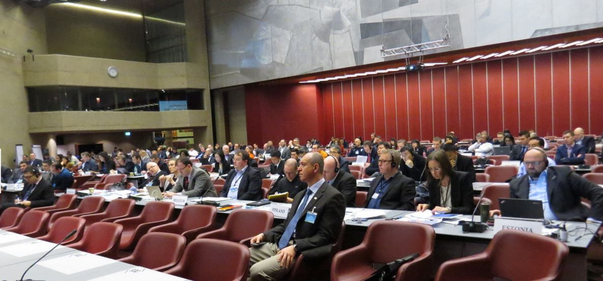
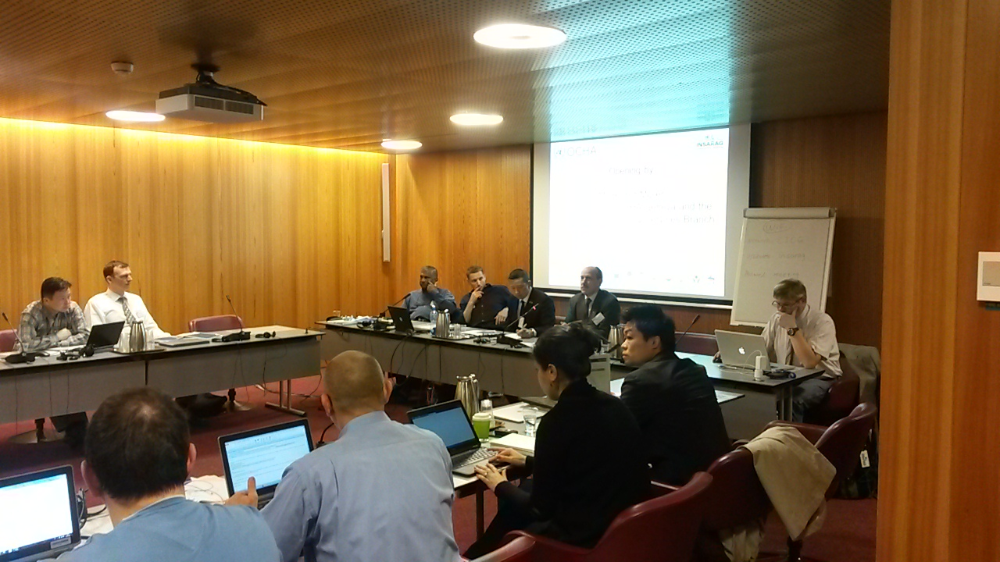
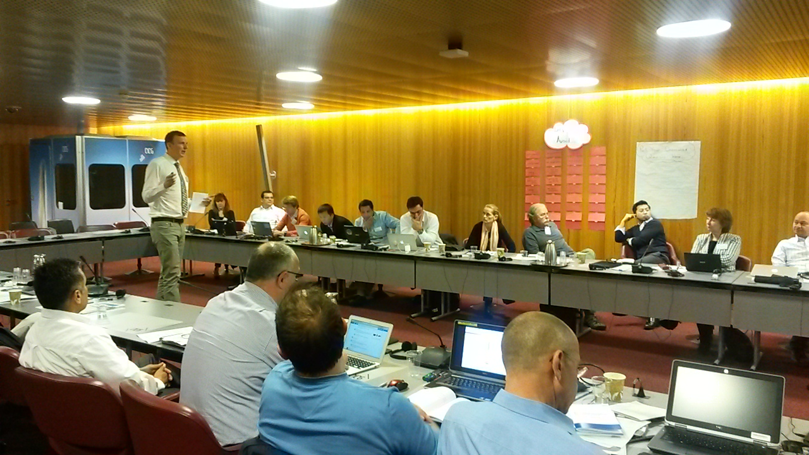
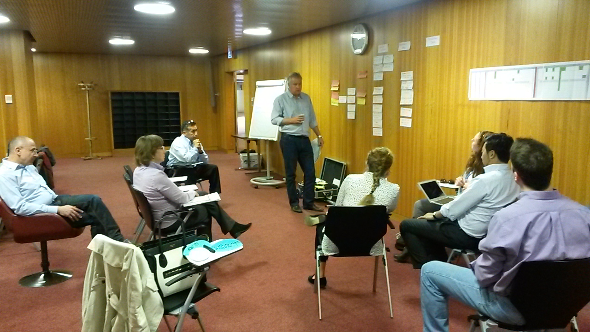
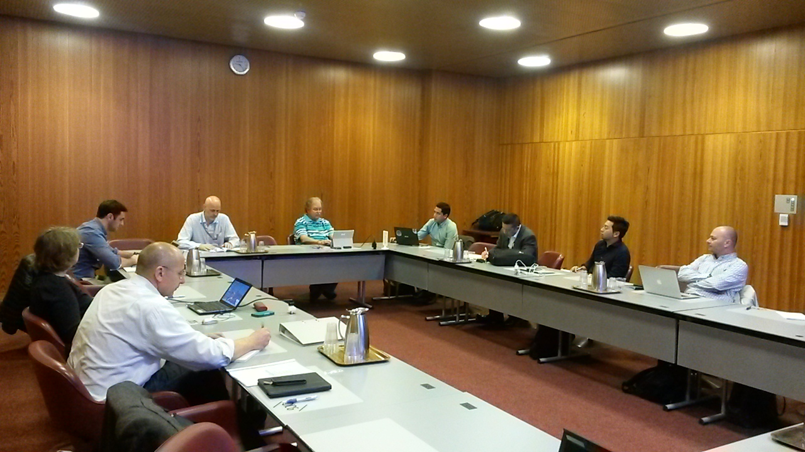

GLOBAL NEWS


- Details
- Hits: 18877
INSARAG IS IN THE WORLD HUMANITARIAN SUMMIT !
The UN Secretary-General will hold the first-ever World Humanitarian Summit (WHS) on 23-24 May in Istanbul, Turkey on 23 and 24 May. The Summit will be held at the highest level and will bring the global community together to reaffirm our solidarity with people affected by crises, and our collective commitment to humanity. As a recommendation from the INSARAG Global Meeting in 2015 and the Steering Group meeting in 2016, the INSARAG Secretariat in OCHA Geneva along with a strong push from our global chair, Ambassador Manuel Bessler, we are pleased to inform you that INSARAG has been chosen to run a side event in the Summit.
I believe that you or representatives from your Governments will be in Istanbul participating in the WHS, and would like to warmly welcome all to participate and support this event. We will update you again on the details of the event once this is confirmed closer to the date.
Should you have any questions related to administrative issues or registration, please contact me or Mr. Winston Chang atchangw@un.org.
INSARAG STEERING GROUP MEETING 2016
On 3 February 2016, the INSARAG Steering Group meeting was opened by Ambassador Manuel Bessler, Global Chairman of INSARAG and Mr. Rudolf Müller, Director a.i. of OCHA Geneva. The Global Chair summarised the key achievements of INSARAG in 2015, outlined the upcoming highlights for 2016 and reflected on issues to be further discussed in the upcoming sessions.
The meeting was attended by 156 participants from 66 Member States and Organizations (see Annex B), including Regional Chairs and Vice-Chairs, Working Group Chairs, National Focal Points and representatives from classified teams, and participants from the Humanitarian Networks and Partnership Week (HNPW). Representatives from OCHA’s Regional Offices and OCHA’s Emergency Services Branch (ESB) also attended. The meeting was facilitated by OCHA’s Field Coordination Support Section in its capacity as INSARAG Secretariat.
Chairman's Summary with Annex A - Agenda
Annex B - Participant list
Annex C1 - Concept Note - Capacity Building
Annex C2 - Concept Note - IER System
Annex C3 - Concept Note - International Light Teams
Annex C4 - Concept Note - Beyond the Rubble
Annex C5 - Concept Note - National USAR Team Accreditation_ENG
Annex C5 - Concept Note - National USAR Team Accreditation _SPA
Humanitarian Networks Partnerships Week 2016
Photo Gallery 1
Photo Gallery 2
(open with Google Chrome) 

END OF THE YEAR'S NEWSLETTER
Message from Jesper Lund, Chief of FCSS and INSARAG Secretary
Dear Colleagues,
As 2015 is coming to an end, I have been reflecting on our experiences this past year. We had twelve UNDAC missions, including floods in Malawi and Myanmar, a cyclone in Vanuatu and the earthquake in Nepal. Two years of consultations culminated in the launch of the INSARAG Guidelines, and along with the new OSOCC Operations course and Emergency Response Methodology training, reflect our efforts to put the right tools in the right hands. It was also a year of building connections with the three organizations taking part in the Professional Dialogue meeting in Cyprus and the second INSARAG Global Meeting in Abu Dhabi. Our operational partners who provide technical support during deployments grew with the signing of a Letter of Intent with the Fuel Relief Fund. Read more...
INSARAG Year End Report 2015

INSARAG GLOBAL MEETING 2015
Message from Jesper Holmer Lund
Secretary of INSARAG
and Chief FCSS, OCHA Geneva
Dear Colleagues and Friends,
The international and national urban search and rescue (USAR) community gathered for the second INSARAG global meeting and 25th anniversary of the International Search and Rescue Advisory Group (INSARAG) in Abu Dhabi, United Arab Emirates (UAE), from 18 to 19 October 2015, back-to-back with the three Working Groups Meetings, USAR Team Leaders Meeting and three Regional Groups Meetings on 20 October - the largest INSARAG gathering in history !
313 participants from 94 countries and organisations and more than 200 participants from the Abu Dhabi Police attended the meeting, leading to the 'INSARAG Abu Dhabi declaration', INSARAG's input to the World Humanitarian Summit in 2016.
As the UN Secretary-General said in his message on this occasion, " As INSARAG celebrates 25 years, you should all be proud of the success this community has achieved...The ability of the network to span continents and cultures is a testament to the commitment of its members and a model of best practice for the humanitarian community"
In the past week, I have received nothing but positive comments. As such, there is no doubt that we fully met our objectives for the series of INSARAG meetings. This astounding success surpassed all expectations, and I thank each and every one of you who contributed time, effort and commitment to making the week of INSARAG meetings in Abu Dhabi a historic and memorable event. Allow me to salute and thank again, all of you who made it possible.
By coming together, we have shown the humanitarian community that INSARAG remains a highly relevant network and can be called upon to deliver value added life-saving assistance based on agreed standards and will continue to improve our response to be "Fit for the Future".
Finally, we are very grateful to the UAE, the Ministry of Interior of the UAE, for hosting this event, UN and international/regional organizations and other entities that contributed.
Please find the session presentations in the links below for the Team Leaders and Global Meetings.
Best regards,
Jesper
Global Meeting Chariman's Summary
Global Meeting presentations
Abu Dhabi Declaration in English
Abu Dhabi Declaration in French
Abu Dhabi Declaration in Spanish
Abu Dhabi Declaration in Chinese
Abu Dhabi Declaration in Arabic
Group photos

ARTICLE "THE GUARDIAN" REGARDING THE INSARAG SIMEX IN CHILE.
Article "The Guardian" regarding the INSARAG Simex in Chile " How did Chile manage to survive its recent earthquake virtually unscathed? The article also in PDF attached .
- Armenia became a member of the UN INSARAG
- Nepal Earthquake - INSARAG Mini-Survey
- INSARAG Regional EQ EX Review Workshop in Geneva
- Training Working Group Meeting in Geneva
ARMENIA BECAME A MEMBER OF THE UN INSARAG
On September 4, Armenia became a member of the UN International Search and Rescue Advisory Group (INSARAG) after the Armenian Urban Search and Rescue (USAR) Team successfully underwent a three-day external classification exercise held on 1-4 September and was classified as a Medium USAR Team. - See more in this link or you can download the document here .
NEPAL EARTHQUAKE - INSARAG MINI-SURVEY
Following the recent Earthquake in Nepal, the OCHA Field Coordination Support Section as INSARAG Secretariat commenced a technical evaluation of the Urban Search and Rescue response with a focus on on deployment considerations, virtual and operational support provided by OCHA, implementation of the 2015 INSARAG Guidelines and work conducted by the USAR teams beyond the initial Search and Rescue phase.
Thoughts and comments were collected through an online survey and we are grateful to those who contributed.
This comments and feedback received through this evaluation will contribute to the Nepal Lessons Learned at the Global INSARAG Meeting in October as well as a system-wide evaluation of the Nepal response to which all USAR teams will be invited to contribute.
Thank you again for your continued support and dedication to INSARAG.
The results of the survey are summarized in the attached REPORT .
INSARAG REGIONAL EQ EX REVIEW WORKSHOP IN GENEVA
The INSARAG Earthquake Response Exercise Redesign Workshop, 15-17 April 2015, was taken place in Geneva. The participants are revising and strengthening the INSARAG Earthquake Response Exercise, by implementing the revised INSARAG Guidelines 2015 and the OSOCC Guidelines 2014. The workshop was officially opened by the Deputy Director OCHA Geneva and Chief of the Emergency Services Branch, Rudolf Müller, and is attended by 44 participants from partners such as the World Health Organization, MapAction, ACAPS, and OCHA Regional Offices. The outcome of the workshop is a generic INSARAG Earthquake Response Exercise Package that for the first time will be used in the upcoming INSARAG exercise in Mongolia.



TRAINING WORKING GROUP MEETING IN GENEVA
The INSARAG Training Working Group (TWG) met on 13-14 April 2015 in Geneva. The TWG is an engaged team of global urban search and rescue experts, who meet three times a year to develop training standards and content for the INSARAG community. The TWG supports the INSARAG Earthquake Response Exercise Redesign Workshop, which currently is taking place (15-17 April). They will provide their unique expertise, and propose a strategy for the revised generic INSARAG Earthquake Response Exercise Package.

SAVE THE DATE: GLOBAL MEETING 2015
INSARAG Global Meeting 2015 in Abu Dhabi, the United Arab Emirates
Join Member States, UN Agencies, the IFRC, and OCHA for the 2nd INSARAG Global Meeting in Abu Dhabi, the United Arab Emirates, from 18 to 20 October 2015.
Highlights:
- Celebrate 25 years of INSARAG's standards setting and contributions to strengthening the effectiveness and coordination of international urban search and rescue (USAR) assistance based on UN GA 57/150.
- Special testimony from rescued survivors of major earthquakes.
- Help chart INSARAG's value add and role in the changing humanitarian landscape through the theme for the meeting: "Fit for the Future".
- The Annual INSARAG USAR Team Leaders Meeting (16-17 October) and 3 Regional Meetings (20 October) meets back-to-back.
Save this date, and see you in Abu Dhabi this October!
Please find attached the Official Second Announcement .
For more information, write to the INSARAG Secretariat at insarag@un.org

ENDORSEMENT OF INSARAG GUIDELINES
INSARAG Guidelines 2015:
The ISG unanimously endorsed the new INSARAG Guidelines 2015, and its implementation plan, including the extension of GRG’s activity through the implementation phase. The new Guidelines put into effect as of 11 February 2015. Regarding the IEC/R Checklist, the IEC/Rs in March (Japan and New Zealand) will use the existing Checklist while using the 2015 Checklist as “trial”, but all the IEC/Rs after 1 April 2015 are required to use the Checklist 2015.
The Guidelines will consist of three volumes: Volume I: Policy, Volume II: Preparedness and Response (Manual A: Capacity Building, Manual B: Operations, and Manual C: IEC/Rs Guide), and Volume III: Operational Field Guide.
Member states welcomed the new Guidelines, and will take full Ownership. They expressed their interest to translate the Guidelines into other languages such as Arabic (UAE), Chinese (China), French (France), German (Germany), Hebrew (Israel), Japanese (Japan), Russian (Russia and Belarus), Spanish (Peru), and Turkish (Turkey).
Please find the new guidelines in the link below:
https://owncloud.unog.ch/public.php?service=files&t=b435decb1305980fd1db4c4ef44e4ae9